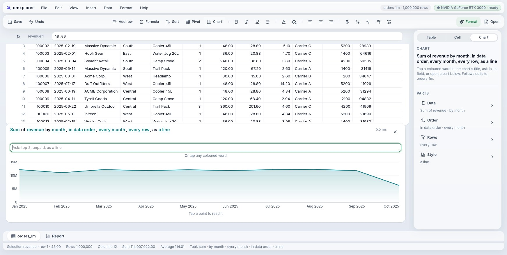
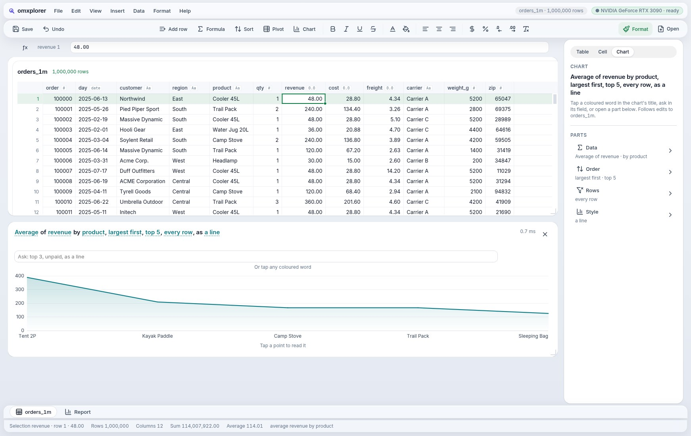

omxplorer
A data explorer that never makes you wait. 100 million rows in a native window, on the GPU or the CPU, whichever is faster.
the real app, recorded on Linux · 100,000,000 rows · RTX 3090 · 22 s, not sped up
We eat our own dog food. omxplorer pushes the framework: if the app can't do something smoothly, the framework isn't done.
The window never waits.
Big queries run beside the window, not in it. The longest pause while 100 million rows are crunched is two frames.
one Linux machine · NVIDIA RTX 3090 · measured by scripts/check, goals 26, 29 and 30
A chart is its sentence.
Sum of revenue by month, every row, as a line
Every coloured word is a setting: tap it to change it, or type what you want; at a million rows it recomputes in under a millisecond.
One capsule tells you everything.
It rests small. When something happens it grows to say what, in 320 ms on a calm curve, then settles back. Tapping it opens your recent work and the GPU's timings.
Liquid, on every screen.
Calm surfaces, motion that settles and never bounces, and three more skins a tap away: Ledger, Graphite and Blueprint. The same app, natively drawn.


Up close magnified
Three pieces, one package.
omxcode
Native controls on each platform, the GPU canvas, the agent tools.
omxframe
A dataframe engine in Mojo: SQL, joins and group-bys on the GPU or the CPU, queries as background jobs.
omxqua
The design language: tonal surfaces, one soft shadow, calm motion.
the research behind it
Try it on your data.
git clone https://github.com/abhisheksreesaila/omxcode cd omxcode && pixi install scripts/omxplorer.sh path/to/your.csv